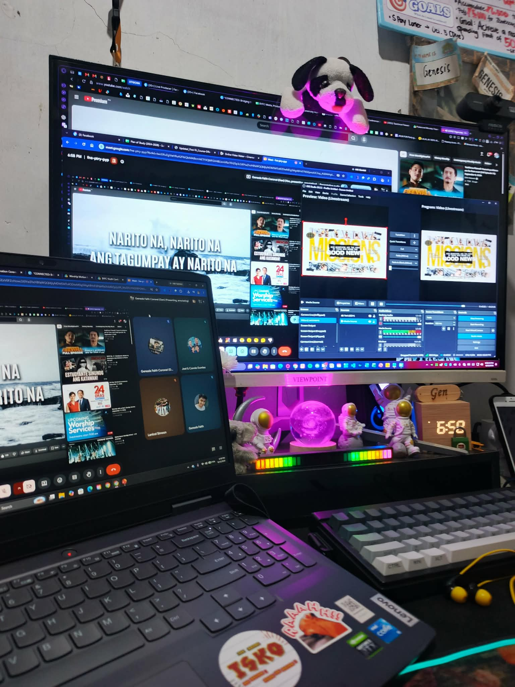
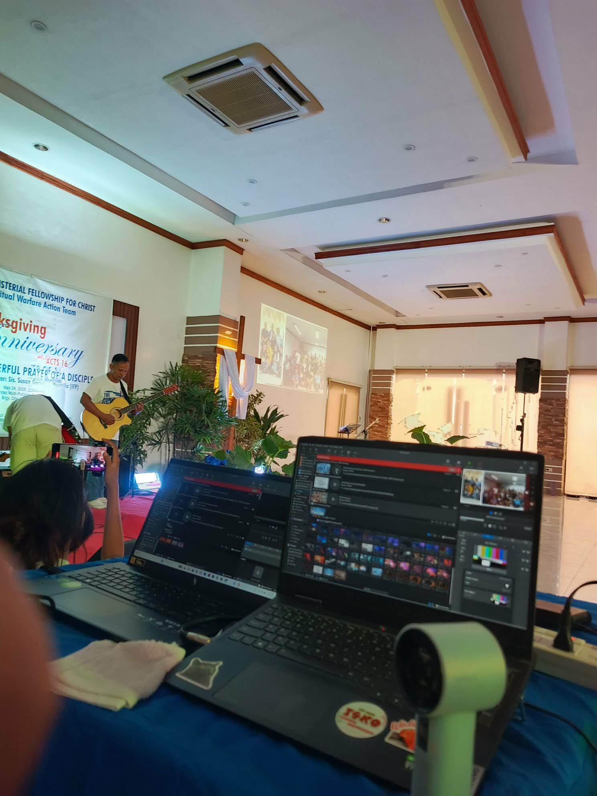
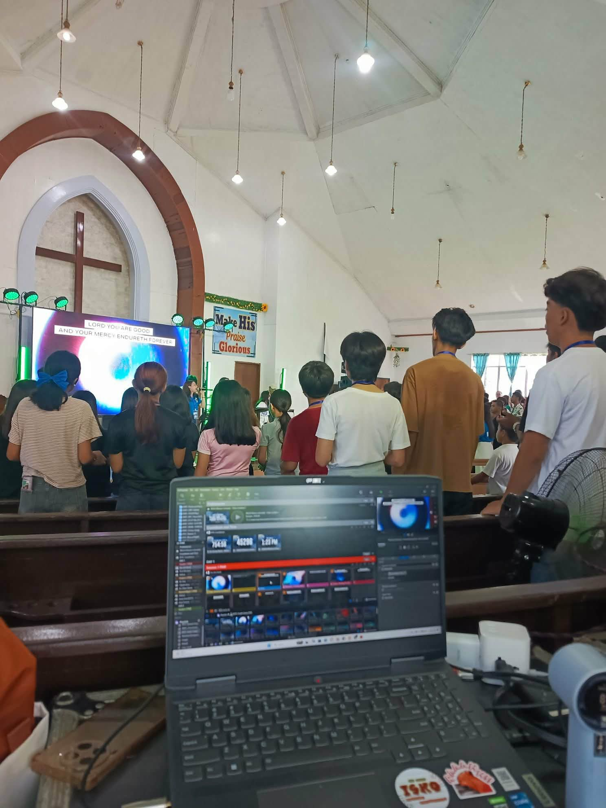
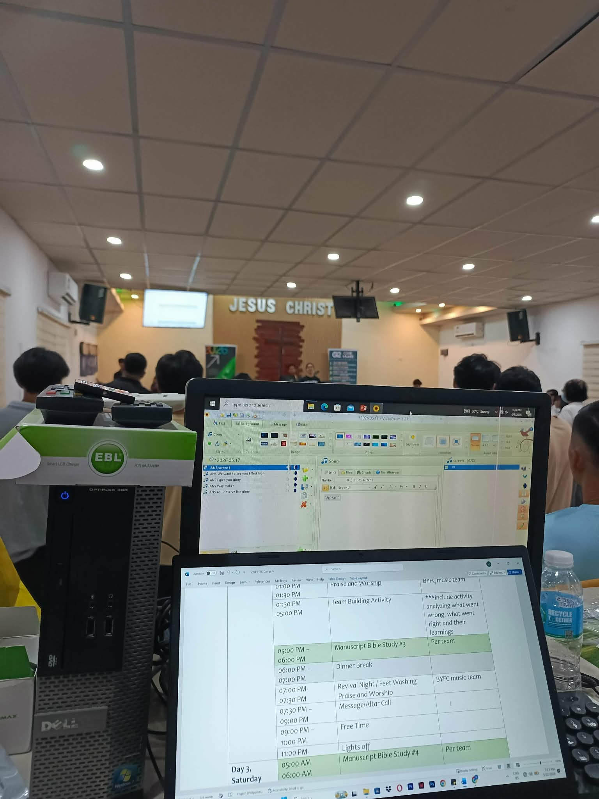
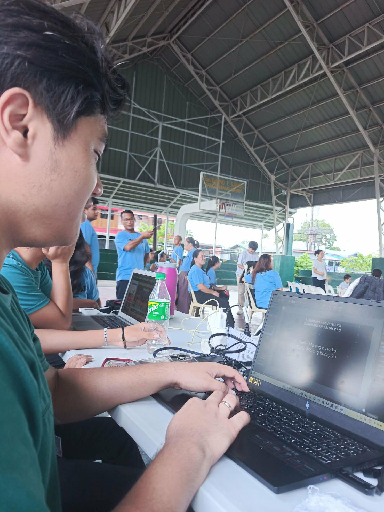
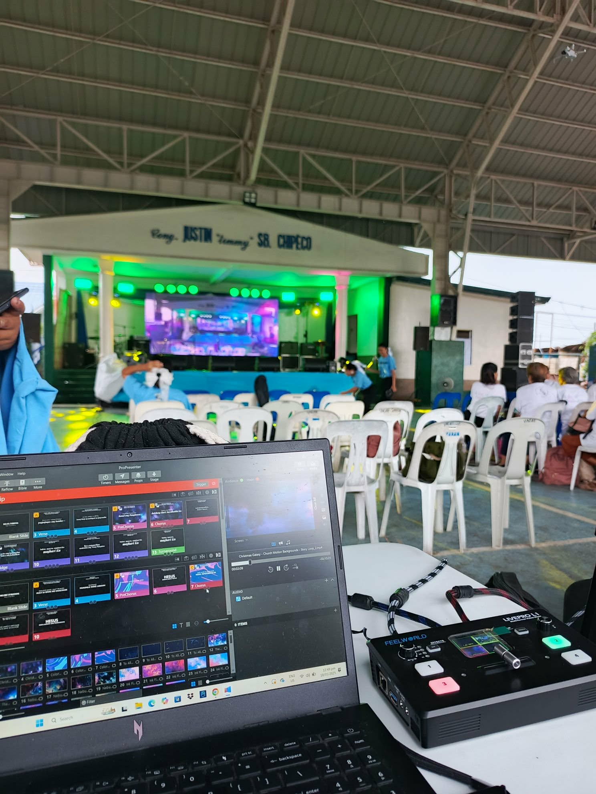
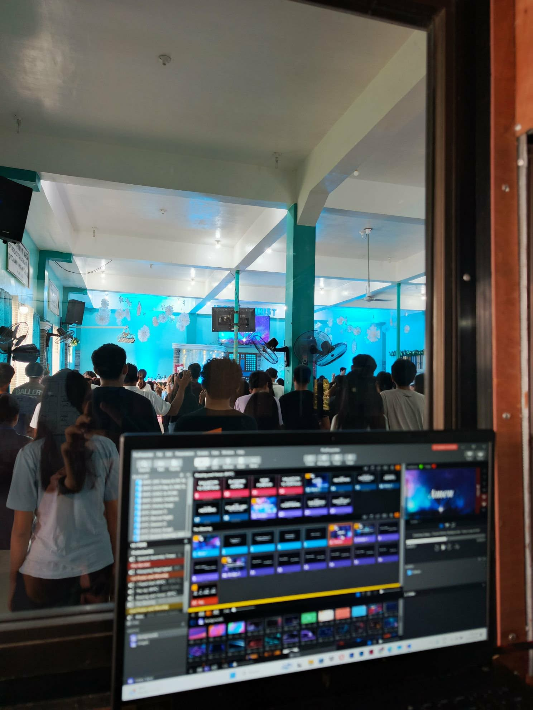
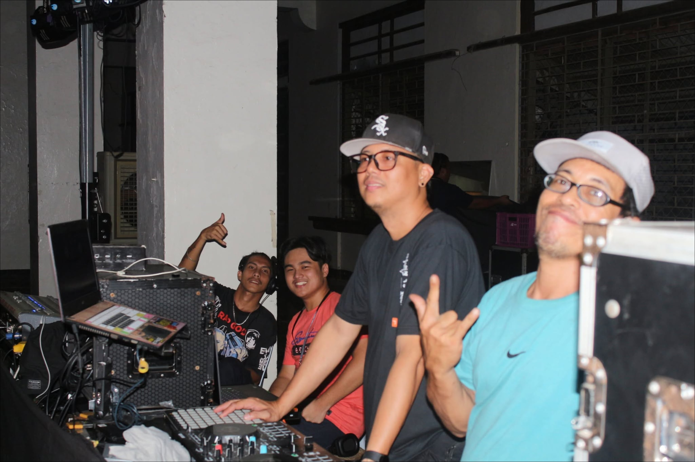
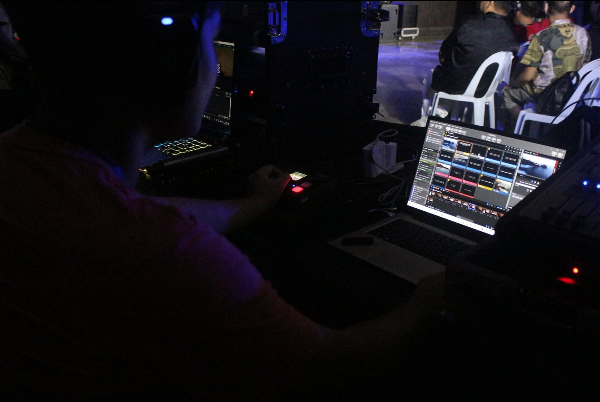

Church Multimedia Production
July 15, 2018









Serving as media head for church multimedia production, managing lights, sound, & LED wall graphics during live services in our church and other churches.